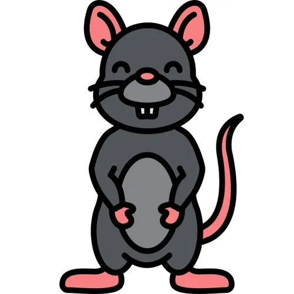
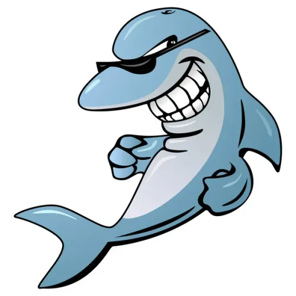

Build the TechBridge Homepage
Day: 1 - Beginner
Create the first version of the TechBridge website using HTML and CSS.
Build the TechBridge Programs Experience
Day: 4 - Beginner
Create a Programs experience that presents TechBridge's available learning programs.
Build the Internship Tasks Experience
Day: 8 - Beginner
Create an interface that presents the TechBridge internship tasks and
helps users
understand the
internship journey.
Build an Interactive Task Tracker
Day: 11 - Intermediate
Use JavaScript to make the internship task experience interactive and allow progress to be
tracked.
Build the Intern Registration Experience
Day: 15 - Intermediate
Create a professional registration/onboarding interface for TechBridge interns.
Build the Task Submission System
Day: 19 - Intermediate → Advanced
Create an interface through which interns can prepare and submit their task work.

Build the Intern Dashboard
Day: 22 - Intermediate → Advanced Beginner
Create a dashboard where an intern can view their profile, progress, tasks, and submissions.
Build the Complete TechBridge Internship Platform
Day: 26 - Intermediate → Advanced Beginner
Combine the different components created during the internship into a complete TechBridge
platform.